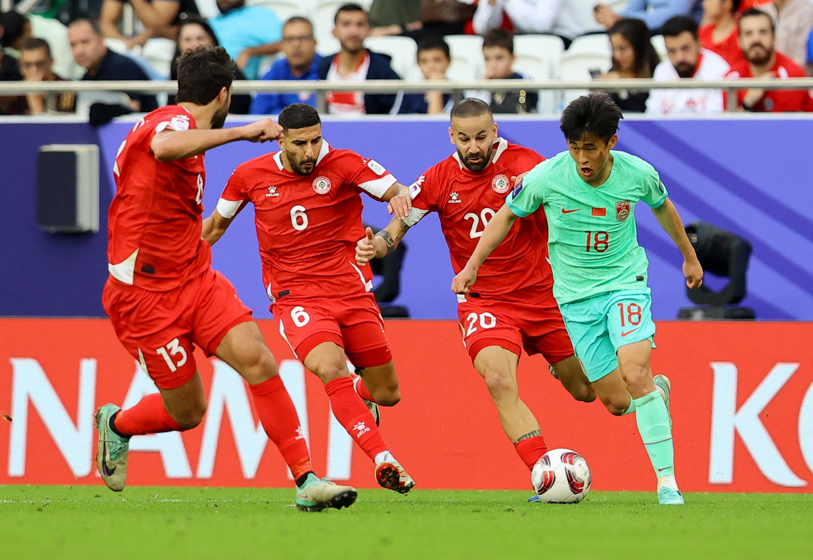
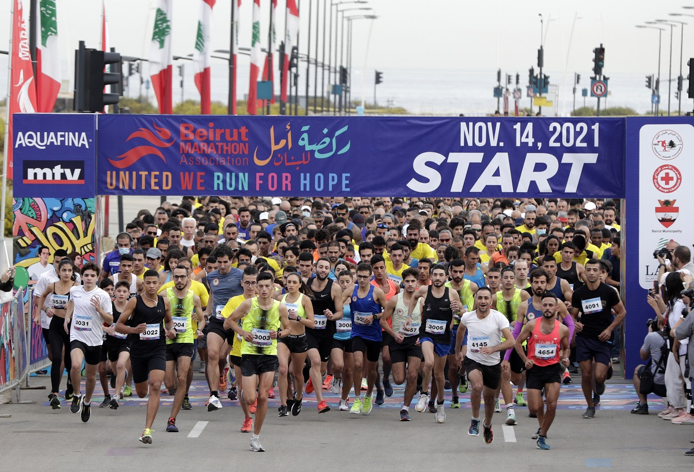
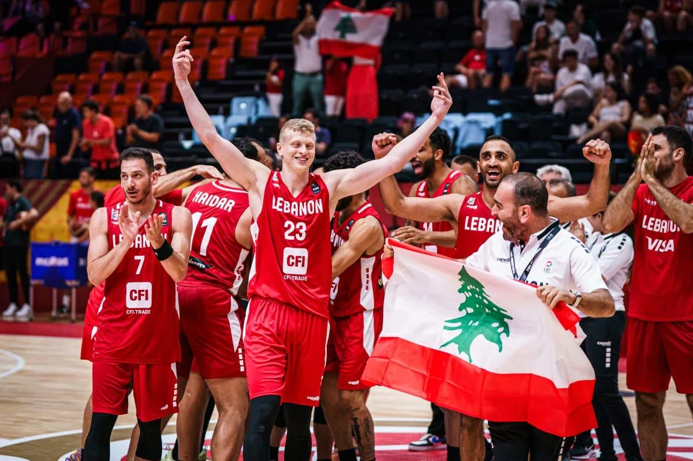
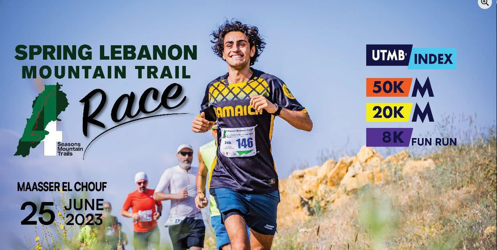
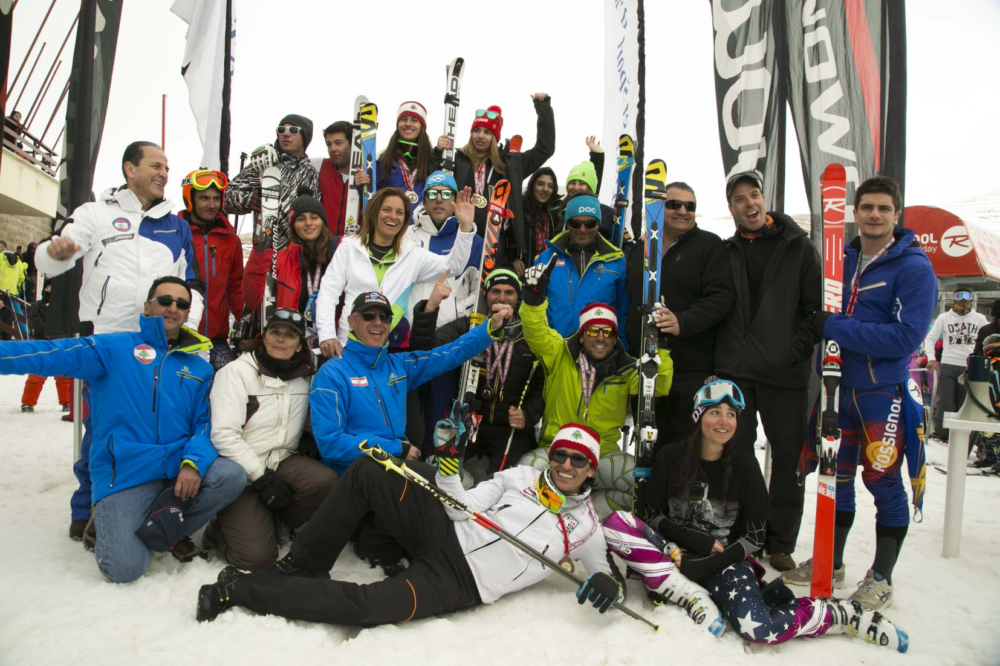
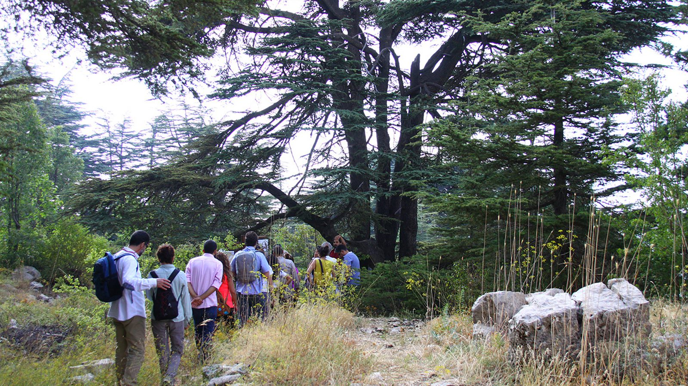
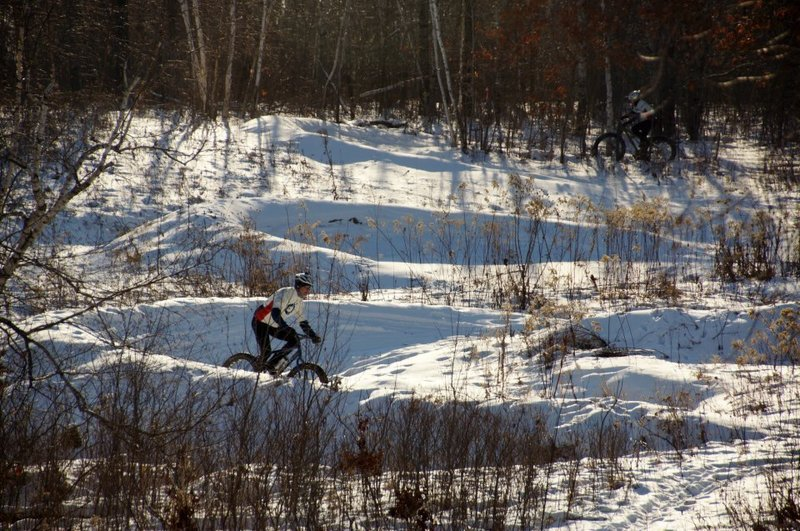
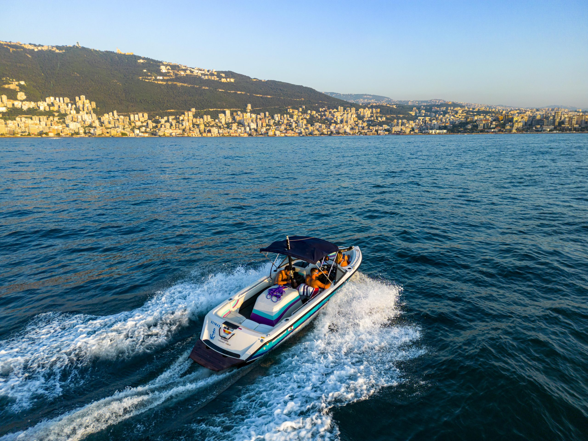
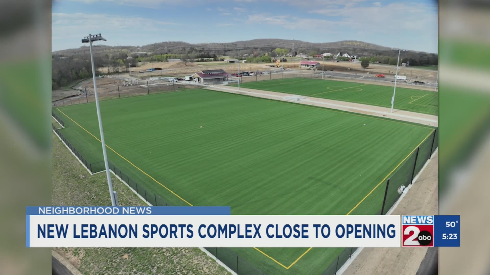

Ministry of Tourism Lebanon
DISCOVER LEBANON
Sport is deeply embedded in Lebanese culture. The mountains have hosted skiers since the 1930s, basketball fills stadiums with intense local passion, and a growing adventure sports scene draws trail runners, climbers, and cyclists to Lebanon's extraordinary terrain.
Lebanon has also hosted major international competitions, the FIBA Asia Championship, international marathon circuits, and regional athletics events, demonstrating a capacity to compete on the world stage despite its small size.
For the visiting sports tourist, Lebanon offers something rare: high level sporting activity combined with one of the richest cultural and culinary environments in the Middle East, all within a country compact enough to explore in a single week.


Held every November, the Beirut Marathon is one of the most celebrated sporting events in the Arab world. The route passes through Beirut's most iconic neighborhoods, the Corniche, Downtown, and the historic streets of the city, drawing thousands of Lebanese and international runners each year. It is as much a celebration of Beirut's resilience as it is a race.
Basketball is Lebanon's most passionately followed sport, and the country has hosted multiple editions of the FIBA Asia Championship. Matches at the Nouhad Nawfal Stadium generate an atmosphere of extraordinary intensity, drawing fans from across the Arab world.


An international trail running event held along sections of the 440 km Lebanon Mountain Trail. It draws competitive runners from across the region through cedar forests, mountain villages, and dramatic highland landscapes, and has helped establish Lebanon as a destination for the global trail running community.
Mzaar Kfardebian and The Cedars host annual national and regional skiing and snowboarding competitions throughout the winter season. Lebanon's national ski team has competed at the Winter Olympics, and the competition circuit draws participants from across the Arab world.

Lebanon's ski resorts offer some of the most accessible skiing in the Middle East, with runs for all levels at altitudes up to 2,800 meters. The surreal ability to see the Mediterranean from the top of a ski run makes Lebanese skiing genuinely unique.

The 440 km Lebanon Mountain Trail runs the full length of the country through over 75 villages, ancient forests, and dramatic mountain scenery. Day sections can be walked independently, and multi day guided treks are available through several local operators.

Lebanon is one of the best paragliding destinations in the Middle East, with thermal flights above the highlands and coastal launches at Jounieh offering views of the bay and mountains together. Tandem flights with certified instructors are available for first timers.

The Chouf Cedar Reserve, Faraya plateau, and Akkar highlands offer varied mountain biking from cross country to technical downhill. Several local operators provide guided tours and bike hire across the main riding areas.

Lebanon's limestone mountains offer sport and trad climbing at established crags near Tannourine, Akoura, and the Faraya gorge. Routes range from beginner to advanced, and international climbers are increasingly discovering Lebanon's quality rock.

The Lebanese coast offers jet skiing, wakeboarding, sea kayaking, and paddleboarding throughout summer. The Palm Islands marine reserve near Tripoli provides the best snorkeling and diving conditions on the coast, with excellent visibility in protected waters.
Lebanon's sports infrastructure ranges from major urban stadiums in Beirut to the natural mountain and coastal arenas that no purpose-built facility could replicate.
Camille Chamoun Sports City — Beirut
Lebanon's largest sports complex, home to the 50,000 seat national stadium. It has hosted the Arab Games, major international football matches, and regional athletics championships.
Nouhad Nawfal Stadium — Beirut
Lebanon's primary indoor arena for basketball, capacity ~10,000. Home to the national basketball team and venue for FIBA Asia Championship fixtures.
Mzaar Kfardebian Ski Resort — Keserwan
The largest ski resort in Lebanon, with over 80 km of runs across four peaks, rental facilities, ski schools, and a gondola system. Hosts Lebanon's national ski championships.
The Cedars Ski Resort — North Lebanon
Lebanon's oldest ski resort, beside the UNESCO-listed cedar grove. Smaller and more traditional than Mzaar, popular for its mountain character.
Sporting Club Beirut — Manara
One of Beirut's oldest sports institutions, on the seafront with swimming, tennis courts, and facilities. A center of Lebanese athletic and social life for decades.
Lebanon Mountain Trail Network — Nationwide
The 440 km LMT is Lebanon's most significant outdoor sports asset, a maintained, waymarked route with village guesthouses and local guides connecting sports tourism directly to rural communities.

Sports tourism directly tackles Lebanon's seasonality problem. Skiing fills winter, trail running and cycling drive spring and autumn, water sports anchor the summer. A developed sports offer distributes visitors far more evenly across the year.
International trail runners, cyclists, climbers, and skiers are a high spending, socially connected demographic that Lebanon has barely begun to tap. They travel independently, share experiences widely, and provide organic international exposure of real value.
Skiing, hiking, and mountain biking directly benefit rural communities with limited economic alternatives. The Lebanon Mountain Trail's network of village guesthouses puts tourism spending into some of the country's most marginalized areas.
Events like the Beirut Marathon generate international media coverage that presents Lebanon as vibrant and forward looking. Lebanon's Olympic and FIBA participation gives the country soft power that transcends politics and conflict.
Sports infrastructure benefits Lebanese residents as much as visitors. Trails, climbing crags, and public sports facilities are investments in the health and wellbeing of Lebanese youth, and the LMT has become a focal point for civic pride among younger Lebanese.
Skiing in the morning and swimming in the afternoon, available in only a handful of places in the world, is Lebanon's single most powerful sports tourism marketing asset. It captures the country's geographic uniqueness in one unforgettable image.
©2026 All Rights Reserved - Ministry of Tourism Lebanon